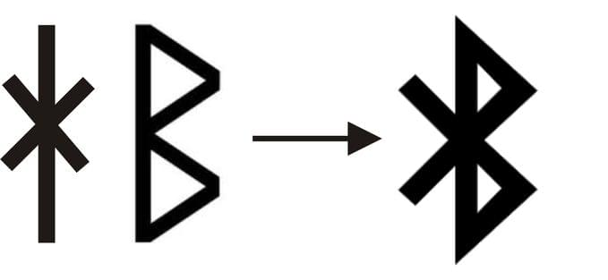

Introdução
Historia
O Bluetooth não surgiu antes de qualquer forma de conexão sem fio. Houve outras tecnologias de comunicação
sem fio
desenvolvidas anteriormente, como o infravermelho (IR) e a rádio frequência (RF), que permitiam a
transferência de dados
entre dispositivos.
O infravermelho foi amplamente utilizado para comunicação sem fio em dispositivos como controles remotos
de televisão,
transmissores de dados de curto alcance e dispositivos de comunicação entre computadores pessoais. No
entanto, o alcance
do infravermelho era limitado e exigia linha de visão direta entre os dispositivos.
A tecnologia de rádio frequência (RF) também existia antes do Bluetooth e foi usada em várias aplicações,
como
comunicação por rádio, telefones sem fio e redes locais sem fio (Wi-Fi). Essas tecnologias permitiam uma
comunicação
mais robusta e com maior alcance do que o infravermelho.
O Bluetooth foi desenvolvido posteriormente para abordar algumas das limitações e desafios das tecnologias
de
comunicação sem fio existentes. Ele foi projetado para fornecer uma forma mais conveniente de conexão sem
fio de curto
alcance, com foco em baixo consumo de energia, simplicidade de uso e interoperabilidade entre dispositivos
de diferentes
fabricantes.
A tecnologia Bluetooth foi desenvolvida por uma equipe de engenheiros da empresa de telecomunicações sueca
Ericsson,
liderada por Jaap Haartsen e Sven Mattisson. Eles começaram a trabalhar no desenvolvimento do Bluetooth no
final da
década de 1990, com o objetivo de criar uma maneira conveniente e sem fio de conectar dispositivos
eletrônicos, como
telefones celulares e computadores.
Embora a Ericsson tenha liderado o desenvolvimento inicial, o Bluetooth como tecnologia foi criado por
meio de uma
colaboração mais ampla entre várias empresas de tecnologia, a Bluetooth Special Interest Group (SIG) que
explicaremos
mais à frente.
Um dos engenheiros da equipe que desenvolvia o Bluetooth estava lendo um livro histórico sobre Vikings e
isso inspirou a
ideia do nome “Bluetooth”: uma homenagem ao rei da Dinamarca e Noruega, Harald Blåtand, que na língua
inglesa é chamado
de Harold Bluetooth. O nome do rei foi escolhido pelo fato dele ter unificado as tribos de seu país,
semelhantemente ao
que a tecnologia pretende fazer: unificar tecnologias diferentes.
Já o logotipo do Bluetooth é a união das runas nórdicas Hagall e Berkanan, correspondentes às letras H e B
do nosso
alfabeto (uma referência ao nome do rei Harald Blåtand). As runas nórdicas são um sistema de escrita
antigo utilizado
pelos povos germânicos do norte da Europa durante a Era Viking, composto por caracteres alfabéticos.

Além disso, "Blåtand" é uma palavra em dinamarquês que pode ser traduzida literalmente como "dente azul".
Na época em
que Harald Blåtand viveu, ele era conhecido por ter um dente que parecia ter uma tonalidade azulada, e
esse detalhe
físico acabou se tornando parte de sua identidade histórica.
Bluetooth SIG, o que é? E evolução
Objetivo
Como funciona? Resumidamente
Topologia
Arquitetura do Bluetooth
Nível de enlace de dados
Nível físico
Modos de Operação do Bluetooth
Mecanismos contra a interferência
FHSS
O Espalhamento Espectral por Salto de Frequência (Frequency Hopping Spread Spectrum - FHSS) é uma técnica muito
importante amplamente utilizada pelo Bluetooth para mitigar os efeitos de interferências externas.
O funcionamento do FHSS se baseia em realizar saltos rápidos e sequenciais entre múltiplas frequências com um padrão
pré-definido. Dessa forma, as chances de haver interferência durante a comunicação se torna mínima, pois a frequência
de transmissão é alterada em períodos curtos de tempo. A escolha das frequências é feita de forma pseudo-aleatória, o
que, além de diminuir ruídos e interferências, também oferece uma camada extra e proteção no uso do Bluetooth.
FEC:
O Forward Error Correction (FEC) é um algoritmo utilizado no contexto do Bluetooth para detecção e correção de erros
durante a transmissão de dados. Esse algoritmo adiciona bits de redundância aos dados antes de enviá-los, permitindo
ao receptor reconstruir os dados originais mesmo que ocorram erros na transmissão.
O FEC utiliza técnicas matemáticas para calcular os bits de redundância, que são adicionados aos dados transmitidos.
Esses bits extras contêm informações que ajudam o receptor a identificar e corrigir os erros. Dessa forma, se ocorrer
uma interferência ou perda de dados durante a transmissão, o receptor pode utilizar as informações redundantes para
recuperar os dados originais.
Uma das vantagens do FEC é a capacidade de corrigir erros sem a necessidade de retransmissão dos dados. Isso é
especialmente útil em casos em que a retransmissão não é viável devido a restrições de tempo ou largura de banda. O
FEC oferece uma solução eficiente para lidar com erros de transmissão e melhorar a confiabilidade da comunicação
Bluetooth.
ARQ:
O Automatic Repeat Request (ARQ) é um mecanismo utilizado no Bluetooth para detectar erros de transmissão e solicitar
a retransmissão dos dados. Quando ocorre um erro na transmissão, o receptor envia uma solicitação ao transmissor para
que os dados sejam reenviados.
O ARQ funciona de forma semelhante a um sistema de confirmação e retransmissão. Após receber os dados, o receptor
verifica a integridade dos mesmos. Se forem detectados erros, o receptor envia um sinal de controle ao transmissor,
indicando que ocorreu um erro e solicitando a retransmissão dos dados.
Existem diferentes variantes do ARQ, como o ARQ de repetição seletiva e o ARQ de solicitação de repetição. Cada
variante possui suas próprias características e estratégias para lidar com erros de transmissão.
O ARQ desempenha um papel importante na comunicação Bluetooth, pois ajuda a garantir que os dados sejam transmitidos
de forma confiável. Quando combinado com outros mecanismos de detecção e correção de erros, como o FEC, o ARQ
contribui para a melhoria da qualidade e confiabilidade das conexões Bluetooth.
Perfis Bluetooth
- Advanced Audio Distribution Profile (A2DP): Permite a transmissão de áudio de alta qualidade de um dispositivo para outro, como streaming de música de um smartphone para um fone de ouvido sem fio.
- Audio/Video Remote Control Profile (AVRCP): Permite o controle remoto de dispositivos de áudio e vídeo, como ajustar o volume ou reproduzir/pausar uma música em um alto-falante Bluetooth usando o smartphone.
- Generic Audio/Video Distribution Profile (GAVDP): Define como os dispositivos se comunicam para distribuir fluxos de áudio e vídeo de alta qualidade, sendo usado em aplicações de streaming de mídia.
- Serial Port Profile (SPP): Permite a emulação de uma porta serial entre dois dispositivos Bluetooth, permitindo a comunicação de dados seriados, como transferência de arquivos ou controle de dispositivos seriais.
- Dial-up Networking Profile (DUN): Permite o uso do Bluetooth para conectar dispositivos a redes de telefonia discada, como discagem para acesso à internet por meio de um telefone celular.
- Personal Area Networking Profile (PAN): Permite a criação de uma rede pessoal usando Bluetooth, permitindo o compartilhamento de conexões à internet, arquivos e outros recursos entre dispositivos.
- Hands-Free Profile (HFP): Especifica a comunicação entre dispositivos móveis e dispositivos mãos-livres, como kits veiculares Bluetooth, permitindo fazer e receber chamadas sem usar as mãos.
- Headset Profile (HSP): Permite a conexão de fones de ouvido e headsets Bluetooth a dispositivos para comunicação de áudio, como chamadas telefônicas.
- Phone Book Access Profile (PBAP, PBA): Permite o acesso e a transferência de dados de agenda telefônica entre dispositivos, como sincronização de contatos de um smartphone para um sistema de navegação veicular.
- Object Push Profile (OPP): Permite a transferência de arquivos, como imagens, vídeos e contatos, entre dispositivos Bluetooth. É amplamente utilizado para compartilhar arquivos entre smartphones, tablets e outros dispositivos compatíveis.
- Basic Printing Profile (BPP): Especifica a comunicação entre dispositivos Bluetooth para impressão de documentos. Permite enviar documentos para impressoras Bluetooth sem a necessidade de fios ou configurações complexas.
- Message Access Profile (MAP): Permite o acesso a mensagens de texto (SMS) e e-mails em dispositivos Bluetooth. É comumente utilizado em dispositivos veiculares para exibição de mensagens e notificações durante a condução.
Os perfis Bluetooth são especificações que definem como os dispositivos se comunicam e interagem uns com os outros em uma rede Bluetooth. Existem diversos tipos de perfis Bluetooth, cada um com sua função específica. Existem dezenas de perfis bluetooth, mas é possível discorrer sobre os principais separados por categoria:
Perfis de Áudio e Vídeo:
Perfis de Conexão de Dados:
Perfis de Controle e Acessibilidade:
Perfis de Troca de Arquivos:
Segurança no Bluetooth
Desafios de segurança
- BIAS (Bluetooth Impersonation Attacks): O BIAS é uma forma de ataque em que um invasor se passa por um dispositivo legítimo para estabelecer uma conexão com outro dispositivo Bluetooth. Isso pode levar a atividades maliciosas, como interceptação de comunicações, injeção de pacotes falsos e até mesmo assumir o controle do dispositivo alvo. O BIAS explora vulnerabilidades nas especificações do Bluetooth e pode permitir que um invasor comprometa a segurança de dispositivos Bluetooth vulneráveis.
- Roubo de dados e espionagem: A comunicação sem fio do Bluetooth pode ser interceptada por um invasor, permitindo o acesso não autorizado a dados confidenciais. Isso pode incluir informações pessoais, senhas, mensagens de texto, chamadas telefônicas e outros dados sensíveis transmitidos entre dispositivos Bluetooth. Os invasores podem usar técnicas de interceptação de pacotes para capturar e analisar o tráfego Bluetooth, comprometendo a privacidade das informações.
- Bluebugging: O Bluebugging é um tipo de ataque em que um invasor ganha acesso total a um dispositivo Bluetooth comprometido, permitindo a realização de várias ações maliciosas. Isso inclui fazer chamadas telefônicas, enviar mensagens de texto, acessar agendas de contatos, ouvir chamadas em andamento e executar comandos no dispositivo alvo, tudo sem o conhecimento do usuário. Esse tipo de ataque requer que o dispositivo alvo tenha uma vulnerabilidade específica.
- Bluesnarfing: O Bluesnarfing é uma técnica usada para acessar informações confidenciais, como contatos, mensagens de texto, e-mails e arquivos armazenados em um dispositivo Bluetooth, sem o consentimento do usuário. Os invasores exploram vulnerabilidades de segurança para obter acesso não autorizado aos dados armazenados no dispositivo alvo.
- Rastreamento de dispositivos: O Bluetooth emite sinais que podem ser usados para rastrear a localização de dispositivos Bluetooth. Embora essa capacidade possa ter aplicações legítimas, como encontrar itens perdidos, também pode ser explorada por invasores para rastrear a localização de um dispositivo ou de uma pessoa sem o seu conhecimento ou consentimento.
Mecanismos de segurança do Bluetooth
- Autenticação: O Bluetooth suporta autenticação para verificar a identidade dos dispositivos envolvidos em uma conexão. Isso é realizado por meio de um processo de emparelhamento, no qual os dispositivos trocam chaves de segurança para estabelecer uma conexão confiável. Isso impede que dispositivos não autorizados se conectem e interajam com outros dispositivos Bluetooth.
- Criptografia: O Bluetooth utiliza algoritmos de criptografia para proteger os dados transmitidos entre dispositivos. A criptografia garante que as informações sejam embaralhadas de forma segura durante a transmissão, tornando-as ininteligíveis para qualquer pessoa não autorizada que tente interceptá-las. O Bluetooth oferece diferentes níveis de criptografia, incluindo o uso de chaves de criptografia de 128 bits ou 256 bits.
- Controle de Acesso ao Meio (MAC): O Bluetooth implementa um esquema de controle de acesso ao meio para evitar interferências e garantir que apenas os dispositivos autorizados possam transmitir dados. O Bluetooth utiliza técnicas de espalhamento espectral e saltos de frequência para dividir o espectro de rádio em canais e evitar colisões de dados entre dispositivos.
- Modos de segurança: O Bluetooth possui diferentes modos de segurança que podem ser aplicados com base nas necessidades específicas de um determinado cenário. Isso inclui modos como Modo Seguro (Secure Mode), que exige autenticação e criptografia, Modo de Apenas Autenticação (Authentication Only Mode), que requer apenas autenticação sem criptografia, e Modo de Apenas Autorização (Authorization Only Mode), que permite a conexão sem autenticação, mas requer autorização explícita.
- Atualizações de segurança: À medida que novas vulnerabilidades são descobertas, os fabricantes e desenvolvedores de Bluetooth lançam atualizações de segurança para corrigir essas vulnerabilidades. É essencial manter os dispositivos Bluetooth atualizados com as últimas atualizações de segurança para garantir a proteção contra ameaças conhecidas.
Aplicações do Bluetooth
Dispositivos móveis e acessórios
- Teclados e mouses sem fio: O Bluetooth também é amplamente utilizado em teclados e mouses sem fio, proporcionando uma experiência de digitação e navegação mais conveniente para dispositivos móveis. Esses acessórios permitem que os usuários digitem com facilidade em tablets e smartphones, além de controlarem o cursor do mouse sem fio.
- Smartwatches e dispositivos vestíveis: O Bluetooth desempenha um papel fundamental na conectividade entre smartphones e smartwatches, permitindo a sincronização de dados, notificações e recursos adicionais. Além disso, dispositivos vestíveis, como pulseiras fitness e rastreadores de atividades, também utilizam o Bluetooth para se conectar a dispositivos móveis e compartilhar informações de saúde e condicionamento físico.
- Transferência de arquivos: O Bluetooth é amplamente usado para transferir arquivos entre dispositivos móveis, como smartphones e tablets. Com a funcionalidade de transferência de arquivos Bluetooth, os usuários podem enviar fotos, vídeos, documentos e outros arquivos de forma rápida e fácil, sem a necessidade de cabos ou conexões de rede.
- Controle remoto: O Bluetooth também é usado para controlar remotamente dispositivos móveis e outros dispositivos eletrônicos. Por exemplo, é possível usar o smartphone como controle remoto para a reprodução de mídia em um sistema de som/TV ou para controlar a reprodução de apresentações em um computador.
O Bluetooth é extensivamente aproveitado em dispositivos móveis e acessórios devido à sua conveniência, versatilidade e capacidade de comunicação sem fio de curto alcance. Ele desempenha um papel essencial em várias aplicações envolvendo dispositivos móveis, fornecendo conectividade e funcionalidade adicional. É possível apresentar algumas das principais aplicações do Bluetooth em dispositivos móveis e acessórios:
Áudio e entretenimento
- Fones de ouvido e alto-falantes sem fio: O Bluetooth é amplamente utilizado para conectar fones de ouvido e alto-falantes sem fio a dispositivos como smartphones, tablets, laptops e TVs. Isso permite que os usuários desfrutem de música, podcasts, filmes e jogos sem a necessidade de fios, proporcionando maior liberdade de movimento e comodidade.
- Sistemas de som domésticos: O Bluetooth é comumente usado em sistemas de som domésticos, como soundbars e caixas de som estéreo, permitindo que os usuários transmitam áudio de seus dispositivos móveis para esses sistemas de som sem necessidade de fios.
- Conectividade com carros: Muitos veículos modernos estão equipados com conectividade Bluetooth, permitindo que os motoristas façam chamadas telefônicas com viva-voz e transmitam música diretamente de seus dispositivos móveis para os sistemas de som do carro. Além disso, o Bluetooth também pode ser usado para controlar certas funções do veículo, como o sistema de entretenimento e navegação.
- Controle remoto de dispositivos de áudio: O Bluetooth também é usado para controlar dispositivos de áudio remotamente. Por exemplo, é possível usar um smartphone como controle remoto para ajustar o volume, alterar faixas de áudio ou ajustar as configurações de equalização em um sistema de som ou em um alto-falante inteligente.
- Realidade virtual (VR) e realidade aumentada (AR): O Bluetooth é amplamente utilizado em dispositivos de realidade virtual e aumentada para transmitir áudio de alta qualidade. Fones de ouvido de realidade virtual e óculos de AR geralmente são equipados com conectividade Bluetooth para permitir a reprodução de áudio imersivo durante experiências virtuais e aumentadas.
O Bluetooth desempenha um papel significativo em aplicações de áudio e entretenimento, proporcionando conectividade sem fio e melhorando a experiência do usuário em várias situações. Aqui estão algumas das principais aplicações do Bluetooth nesse contexto:
Automação residencial e Internet das Coisas (IoT)
- Controle de iluminação: O Bluetooth permite o controle de iluminação sem fio em residências inteligentes. Os usuários podem ajustar a intensidade da luz, criar ambientes personalizados e programar cenários de iluminação usando dispositivos móveis ou assistentes de voz.
- Controle de temperatura: Termostatos Bluetooth permitem que os usuários controlem o aquecimento, resfriamento e programem a temperatura em suas residências remotamente. Isso ajuda na eficiência energética e no conforto do ambiente.
- Sistemas de segurança: O Bluetooth é utilizado em sistemas de segurança residencial para conectar câmeras, sensores de movimento e alarmes a um hub central. Isso permite monitoramento em tempo real e controle remoto da segurança residencial.
- Fechaduras inteligentes: As fechaduras Bluetooth oferecem conveniência e segurança, permitindo que os usuários desbloqueiem portas usando seus smartphones ou outros dispositivos autorizados, eliminando a necessidade de chaves físicas.
Saúde e dispositivos médicos
- Monitoramento de saúde: Dispositivos de monitoramento de saúde, como monitores de frequência cardíaca, medidores de glicose no sangue e medidores de pressão arterial, utilizam o Bluetooth para transmitir dados para dispositivos móveis ou sistemas de monitoramento.
- Dispositivos vestíveis (wearables): Pulseiras fitness, smartwatches e outros dispositivos vestíveis usam o Bluetooth para coletar e transmitir dados de saúde, como atividade física, sono e ritmo cardíaco, para aplicativos de monitoramento em dispositivos móveis.
- Telemedicina: O Bluetooth permite a comunicação entre dispositivos médicos e profissionais de saúde em consultas remotas. Isso possibilita o monitoramento remoto de pacientes, permitindo diagnósticos mais rápidos e tratamentos mais eficientes.
- Administração de medicamentos: Dispositivos de administração de medicamentos, como bombas de insulina e dispositivos de inalação, podem ser conectados por Bluetooth a aplicativos móveis que ajudam os pacientes a monitorar e controlar suas doses.
Outras aplicações emergentes
- Monitoramento de saúde: Dispositivos de monitoramento de saúde, como monitores de frequência cardíaca, medidores de glicose no sangue e medidores de pressão arterial, utilizam o Bluetooth para transmitir dados para dispositivos móveis ou sistemas de monitoramento.
- Dispositivos vestíveis (wearables): Pulseiras fitness, smartwatches e outros dispositivos vestíveis usam o Bluetooth para coletar e transmitir dados de saúde, como atividade física, sono e ritmo cardíaco, para aplicativos de monitoramento em dispositivos móveis.
- Telemedicina: O Bluetooth permite a comunicação entre dispositivos médicos e profissionais de saúde em consultas remotas. Isso possibilita o monitoramento remoto de pacientes, permitindo diagnósticos mais rápidos e tratamentos mais eficientes.
- Administração de medicamentos: Dispositivos de administração de medicamentos, como bombas de insulina e dispositivos de inalação, podem ser conectados por Bluetooth a aplicativos móveis que ajudam os pacientes a monitorar e controlar suas doses.
Desafios e perspectivas futuras do Bluetooth
Avanços tecnológicos
- Bluetooth 5.0 e 5.1 : O Bluetooth 5.0, lançado em 2016, trouxe melhorias significativas em termos de velocidade, alcance e capacidade de transmissão de dados. Com uma taxa de transferência de dados duas vezes maior do que a do Bluetooth 4.2, o Bluetooth 5.0 permite uma transmissão mais rápida e estável de conteúdos de alta qualidade, como áudio de alta definição e vídeo em tempo real. Além disso, o Bluetooth 5.0 aumentou o alcance da comunicação em até quatro vezes, tornando-o mais adequado para uso em ambientes maiores, como casas e escritórios. O Bluetooth 5.1 é uma versão do padrão Bluetooth que trouxe inovações significativas em termos de localização indoor e rastreamento de dispositivos. Essa versão introduziu recursos como a detecção de direção (Direction Finding) e a determinação de distância em tempo real, fornecendo melhorias substanciais na precisão de localização dentro de ambientes fechados.
- Bluetooth de baixa energia (Bluetooth Low Energy - LE): O Bluetooth LE foi introduzido com o Bluetooth 4.0 e tem sido uma importante tecnologia para dispositivos que requerem baixo consumo de energia. Ele foi projetado para aplicações como dispositivos vestíveis (wearables), sensores e dispositivos de monitoramento de saúde, permitindo que eles sejam alimentados por baterias de longa duração ou até mesmo por células solares. O Bluetooth LE oferece uma maneira eficiente de estabelecer conexões de curto alcance, permitindo a comunicação entre dispositivos com um consumo de energia mínimo.
- Bluetooth Mesh: O Bluetooth Mesh é uma extensão do padrão Bluetooth que permite a criação de redes de dispositivos interconectados em uma topologia em malha (mesh). Diferentemente do modelo tradicional de comunicação ponto a ponto do Bluetooth, o Bluetooth Mesh permite que os dispositivos se comuniquem uns com os outros de forma descentralizada, transmitindo mensagens através dos nós da rede.
Por ser uma tecnologia popular e muito útil em diversos cenários, o bluetooth está constantemente sendo
pesquisado e aprimorado. É possível visualizar alguns avanços tecnológicos que foram conquistados:
Na prática, o Bluetooth Mesh oferece uma série de benefícios. Um dos principais é a escalabilidade, pois é possível ter um grande número de dispositivos na rede, cobrindo uma área ampla. Além disso, a comunicação em malha proporciona uma maior redundância de caminhos, garantindo que as mensagens possam ser transmitidas de forma confiável, mesmo em ambientes com obstáculos físicos ou dispositivos distantes uns dos outros.
Limitações atuais e possíveis melhorias
- Alcance limitado: O Bluetooth possui um alcance efetivo de cerca de 10 metros, o que pode ser insuficiente para algumas aplicações em ambientes maiores. Essa limitação é mais evidente em cenários de automação predial, onde é necessário cobrir áreas extensas. Possíveis melhorias incluem o desenvolvimento de amplificadores de sinal ou a utilização de antenas mais avançadas para aumentar o alcance do Bluetooth.
- Interferência: O Bluetooth opera na faixa de frequência de 2,4 GHz, que também é utilizada por outros dispositivos sem fio, como redes Wi-Fi, dispositivos de áudio sem fio e fornos de micro-ondas. Essa sobreposição de frequências pode causar interferências e impactar a qualidade da conexão Bluetooth. Para mitigar esse problema, é necessário o uso de técnicas de mitigação de interferência, como algoritmos de frequência hopping, que permitem que os dispositivos Bluetooth alternem rapidamente entre diferentes canais de comunicação para evitar interferências.
- Consumo de energia: Embora o Bluetooth Low Energy (LE) tenha sido introduzido para atender a requisitos de baixo consumo de energia, ainda pode haver desafios em algumas aplicações que dependem de longa duração da bateria. Dispositivos de alta potência, como alto-falantes Bluetooth, podem consumir energia rapidamente. Melhorias nessa área podem envolver o desenvolvimento de algoritmos de gerenciamento de energia mais eficientes, bem como otimizações no hardware e nas implementações de software.
- Velocidade de transferência de dados: Embora o Bluetooth tenha evoluído significativamente em termos de velocidade com as versões mais recentes, como o Bluetooth 5.0, a taxa de transferência de dados ainda pode ser limitada para aplicações que exigem transmissão de grandes quantidades de dados, como transferência de arquivos de mídia em alta resolução. Possíveis melhorias podem envolver o desenvolvimento de técnicas de compressão mais eficientes e o aumento das capacidades de transmissão de dados nas futuras versões do Bluetooth.
Perguntas
Além de evitar interferências, qual outra função importante do Espalhamento Espectral por Salto de Frequência (Frequency Hopping Spread Spectrum - FHSS)
Além de funcionar como um mecanismo que diminui a interferência de comunicação, o FHSS, por utilizar de pseudo-aleatoriedade na seleção de frequência, também dificulta a interceptação de dados, sendo um componente importante de segurança.PERGUNTA
RESPOSTAPERGUNTA
RESPOSTAPERGUNTA
RESPOSTAPERGUNTA
RESPOSTABibliografia
Bluetooth Official Website https://www.bluetooth.com
Trabalho Bluetooth : https://www.inf.pucrs.br/~cnunes/redes/Trabalho%20Bluetooth.pdf
Bluetooth - Uma Abordagem Prática : http://www.logicengenharia.com.br/mcamara/ALUNOS/Bluetooth.PDF
Bluetooth Technology Explained ( Youtube Video ) : https://youtu.be/jzxZUJmOu3o
Introdução ao Bluetooth : https://www.gta.ufrj.br/grad/02_1/bluetooh/
An overview of the Bluetooth wireless technology - Bisdikian, Chatschik - IEEE Communications magazine, 39(12), 86-94. (2001) https://doi.org/10.1109/MCOM.2001.993421
Bluetooth 5.1: An analysis of direction finding capability for high-precision location services Pau, Giovanni et al. Sensors, 21(11), 3589. (2021) https://doi.org/10.3390/s21113589
Bluetooth Low Energy: The Developer Handbook - Heydon, Robin Pearson, 1st edition (October 26, 2012) https://picture.iczhiku.com/resource/eetop/SyITTzRUzEfGEmCn.pdf
Grupo
Trabalho Teórico de Redes de Computadores I
Professor: Luís Henrique Maciel Kosmalski Costa
Alunos:
Abraão Carvalho Gomes
Giovanni Maffeo de Medeiros